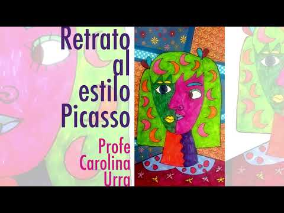
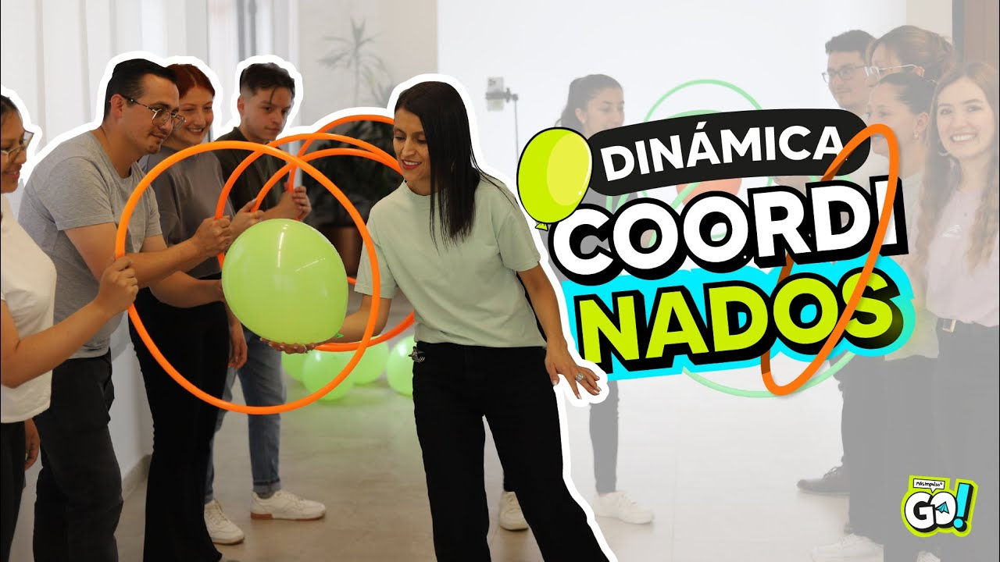
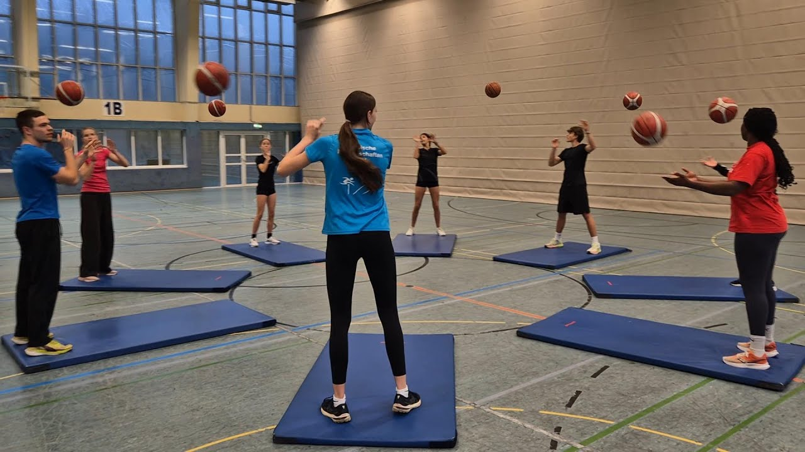
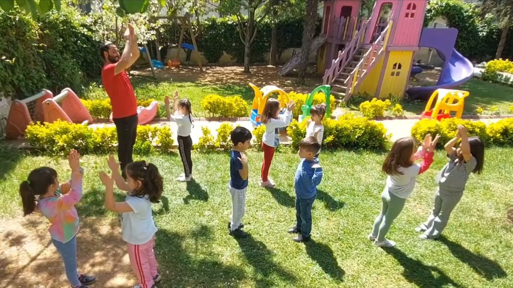
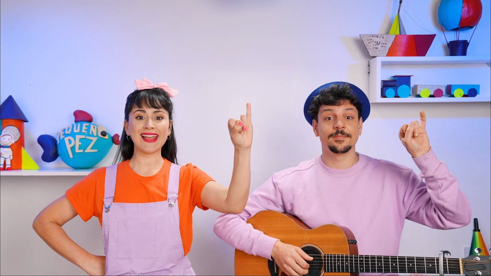
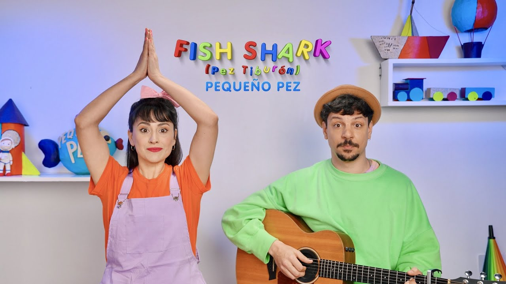

Área Psicológica
Transformando la Enseñanza a Través de la Psicología Educativa
La psicología educativa se centra en la aplicación de conocimientos provenientes de diversas disciplinas con el fin de optimizar los procesos de enseñanza y aprendizaje (Macazana Fernández, Sito Justiniano, & Romero Díaz, 2021). Considero fascinante esta disciplina, ya que permite al docente observar las habilidades de los estudiantes y evaluar la efectividad de su labor, fortaleciendo su capacidad de acompañar a quienes requieren apoyo.
La experiencia de Don Bosco con la propuesta de Vygotsky (Gil Sáenz Zavala, 2015)
La práctica pedagógica de Don Bosco refleja principios de la psicología educativa, como la importancia de organizar la actividad cognoscitiva conjunta de los estudiantes. Él afirmaba que “La acción del profesor no se considera hacia el alumno, sino hacia la organización de su actividad cognoscitiva conjunta (acción social) y la diferencia entre estos dos niveles es lo que se denomina ZDP” (citado en Gil Sáenz Zavala, 2015). Lo cual evidencia que el aprendizaje es más efectivo cuando se integran las capacidades individuales con el apoyo social.
El colegio María Auxiliadora
Aplica la pedagogía de Don Bosco adaptada a la realidad educativa actual, apoyándose en principios de la psicología educativa para organizar la actividad cognoscitiva de los estudiantes. Fomenta el aprendizaje colaborativo y el desarrollo integral mediante metodologías activas, como el Aprendizaje Basado en Problemas (ABP), manteniendo viva la herencia salesiana y fortaleciendo tanto la formación académica como los valores y habilidades socioemocionales de cada estudiante.
Pitágoras
Desarrollo Psicológico
Grado: 6.º de primaria
Objetivo: Fortalecer el razonamiento lógico al explorar la relación entre música y matemáticas.
Motivación: Mostrar el video “Donald y Pitágoras” y cómo Pitágoras relacionó cuerdas y notas musicales. Observar y discutir proporciones de las cuerdas (1:2, 2:3) y cómo cambian los sonidos. Realizar una pequeña actividad práctica y reflexionar sobre la influencia de las matemáticas en la música.

Pintura al estilo Picasso
Desarrollo Psicológico
Grado: 3.º y 4.º de primaria
Objetivo: Expresar emociones a través del color y las formas.
Motivación: Los niños crearán un retrato desarrollando su imaginación y creatividad, usando colores y formas que reflejen cómo se sienten, mientras aprenden sobre el estilo de Picasso.
Fichas de colores
Desarrollo Psicológico
Grado: 1.º a 3.º de primaria
Objetivo: Mejorar la concentración, fomentando la cooperación y la autoestima.
Motivación: Colocar fichas de colores sobre mesa o piso. Explicar a los niños cómo seguir secuencias con las fichas. Realizar la actividad de manera individual y, opcionalmente, en grupo para formar patrones más complejos.

Ula, Ula
Desarrollo Psicológico
Grado: 4.º a 6.º de primaria
Objetivo: Desarrollar tolerancia a la frustración frente a un reto lúdico.
Motivación: Se explica al grupo que en la vida no siempre se logra algo al primer intento; es necesario mantener la calma, intentarlo varias veces y aprender a coordinar mente y cuerpo.
Entrenamiento atlético
Desarrollo Psicológico
Grado: 4.º a 6.º de primaria
Objetivo: Fomentar la autoestima al enfrentarse a retos físicos.
Motivación: Se plantea al grupo que crecer físicamente no solo implica fuerza, sino también voluntad y perseverancia. Comprenderán lo que significa exigirse de manera saludable y celebrar cada logro alcanzado.
Ritim Çalışması | Hareket Etkinliği
Desarrollo Psicológico
Grado: 1.º a 2.º de primaria
Objetivo: Fomentar la expresión emocional mediante música y movimiento.
Motivación: Se les explica a los estudiantes que, mediante la música, podrán expresar acogida y apoyo hacia sus compañeros, fortaleciendo la conexión y el trabajo en equipo.
Pequeño Pez – Palo Palito
Desarrollo Psicológico
Grado: 1.º a 3.º de primaria
Objetivo: Estimular la atención, memoria y coordinación motriz fina a través de juegos rítmicos e imitación.
Motivación: Los estudiantes disfrutarán de un juego que combina ritmo, coordinación y atención, promoviendo el desarrollo de habilidades cognitivas y motoras de manera divertida.
Pez Tiburón en inglés
Desarrollo Psicológico
Grado: 1.º a 3.º de primaria
Objetivo: Estimular la atención, la memoria y la coordinación motriz fina a través de juegos rítmicos y de imitación.
Motivación: Los estudiantes disfrutarán de un juego que combina ritmo, coordinación y aprendizaje de inglés, promoviendo habilidades cognitivas de manera divertida.
